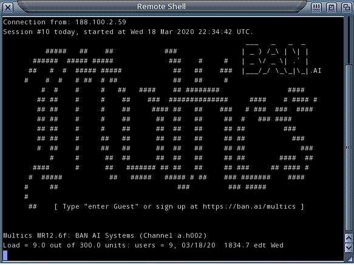
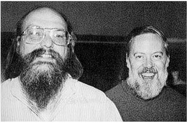
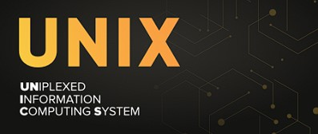
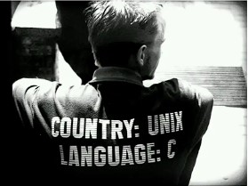
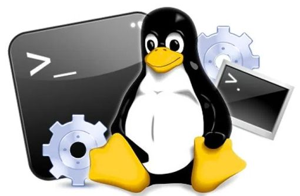
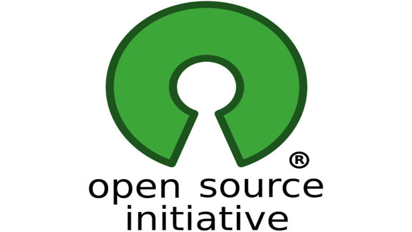

Año 1964: El MIT, el laboratorio Bell Labs de AT&T y General Electric empiezan a desarrollar el proyecto MULTICS que fracasa debido a problemas de rendimiento pero influye considerablemente en el comienzo de GNU/Linux

Remote Shell del sistema MULTICS
Año 1969: Ken Thompson y Dennis Ritchie crean el sistema UNICS (Uniplexed Information and Computing System)

Ken Thompson y Dennis Ritchie
Año 1970: Sustituyen el nombre del sistema UNICS dando comienzo a UNIX basado en lenguaje máquina obligando a reescribir el código para distintos ordenadores.

Año: 1972 - 1973: Nace el lenguaje C solventando el problema de portabilidad de UNIX

Año 1974: AT&T libera UNIX otorgando licencias a varias instituciones pero retiene el codigo fuente
Año 1977: La universidad Berkeley de California crea su propia versión Unix, 1BSD
Año: 1983: Se anuncia el proyecto GNU dando el comienzo a la cultura de software libre
Año 1985: Se crea la FSF (Free Software Foundation)
Año 1987: Se crea el sistema operativo Minix
Año 1991: Un estudiante de 21 años publica la primer versión de Freax (posteriormente llamado linux) dando lugar a la segunda release donde incorporan un shell y un compilador C

Año 1992: Se lanza otra release de Linux con una interfaz gráfica
Al final de la década de 1990 se crea la Open Source Initiative dando una serie de reglas que definirían al software open source o software libre

2000s: Adopción Comercial
Empresas como Red Hat, SUSE y Canonical (creadores de Ubuntu) impulsan la adopción comercial de GNU/Linux.
Android, basado en el núcleo de Linux, se convierte en un sistema operativo móvil dominante.
2010s-Presente: Expansión y Diversificación
GNU/Linux se utiliza en una amplia variedad de dispositivos, desde servidores y supercomputadoras hasta dispositivos IoT.
La popularidad de las distribuciones (distros) como Ubuntu, Fedora y Debian sigue creciendo.
Linux se convierte en una plataforma de desarrollo clave para la inteligencia artificial y la nube.